7.3. Propiedades¶
CSS3 es una especificación inmensa con múltiples módulos definidos en distintos documentos y no tenemos el tiempo ni las fuerzas para desarrollar en esta documentación un resumen apropiado. Lo cierto es que para un desarrollador que no sea diseñador es más práctico utilizar un framework como Bootstrap, ya que:
Dota de un aspecto atractivo predeterminado a los distintos elementos de la página.
Tiene ya definidos componentes habituales lo que nos ahorra tener que crearlos.
Como consecuencia de los dos puntos anteriores, la labor del desarrollador se limita a personalizar mínimamente el aspecto con CSS.
El epígrafe, por tanto, se limitará a dar un conjunto de pautas para entender y aprender las propiedades CSS y expondrá brevemente los principios de maquetación con las dos estrategias más modernas y potentes: Flexbox y Grid.
7.3.1. Pautas¶
Para su compresión necesitamos conocer:
Los fundamentos de su sintaxis: cómo se escriben las reglas, cómo se construyen los selectores y cómo actúa el algoritmo de cascada.
Cómo funciona el modelo de cajas y sus dimensiones asociadas. Un buen punto de partida es esta introducción al modelo de cajas de lenguajecss.com.
Los métodos para colocar (posicionamiento) los elementos en el documento. Los mecanismos tradicionales eran torpes hasta que apareció Flexbox y, más tarde, Grid. De nuevo, la introducción a la maquetación de lenguajecss.com es un buen comienzo.
Estos dos mecanismos modernos, junto a @media, son las herramientas básicas para el diseño web adaptable[1]. Échele un vistazo a éste sencillo ejemplo, que implementa una típica web con un cuerpo central de tres secciones (menú de navegación, texto propiamente dicho y publicidad). En principio, se encuentran en tres columnas, pero si prueba a reducir lo suficiente el ancho, verá cómo pasan a situarse una sección por debajo de la otra y, además, la publicidad pasa a situarse en medio.
Nota
Bootstrap es una alternativa sencilla a la maquetación mediante estas herramientas nativas y, además, ofrece un aspecto predeterminado de los elementos y componentes prefabricados con lo que es muy intersante si nos queremos centrar en el desarrollo y no tanto en el diseño.
Las principales propiedades que nos sirven para dar aspecto básico a la página relativas a:
Estas propiedades necesitaremos conocerlas, aunque nos ayudemos de Bootstrap para personalizar el aspecto predefinido de las páginas. Otras no serán tan necesarias en ese caso, pero son indispensables, si no se usa tal herramienta:
Maquetación (display, etc).
Diseño adaptativo, ya que nuestro público objetivo en muchos casos accederá desde dispositivos distintos a un ordenador (móviles o tablets).
Ver también
Para el que prefiera los vídeos hay en YouTube toda una serie sobre CSS de Kiko Palomares.
7.3.2. Maquetación¶
La maquetación tradicional con CSS se basaba en elementos de bloque (que de forma natural tendían a ocupar todo el ancho disponible y a situarse el siguiente por debajo del anterior), definición de sus anchos (para que no ocuparan todo), la propiedad float y, en ocasiones, la propiedad position. Como consecuencia, se tenían que hacer auténticas recetas esotéricas para lograr hacer maquetaciones relativamente sencillas[2], que, además, ni siquiera resultaban adaptables a distintos dispositivos.
La evolución de CSS trajo dos modernos métodos de posicionamiento que han facilitado enormemente esta tarea. En este apartado explicaremos los fundamentos de ambos sin entrar en excesiva profundidad. La idea es conocer sus fundamentos y afianzarlos con un par de juegos que se enlazarán más adelante.
Antes, sin embargo, dejaremos algo de código CSS que nos puede servir, en ambos casos, para ver mejor la maquetación de los bloques:
#container {
border: solid 1px black;
background-color: #EEE;
}
.item {
border: solid 2px black;
padding: 1em;
}
.item:nth-child(3n-2) {
background-color: #FEE;
}
.item:nth-child(3n-1) {
background-color: #EFE;
}
.item:nth-child(3n) {
background-color: #EEF;
}
Nota
Para las capturas ilustrativas se ha usado este documento
HTML.
7.3.2.1. Flexbox¶
Prudencia
Las explicaciones son totalmente insuficientes, por lo que lo conveniene es profundizar con una guía sobre flexbox más completa.
Este método de maquetación se aplica sobre las cajas contenidas dentro de una caja contenedora cuya propiedad display tenga el valor de
flex:#container { display: flex; } /* Aspecto adicional de cada ítem */ .item { margin: .15em; /* Añadimos una anchura máxima. Si no la añadiéramos: - Cuando los ítems se disponen en filas, el ancho de cada uno se ajustará para albergar mejor el contenido. - Cuando los ítems se disponen en columnas, cada uno ocupa todo el ancho del contenedor. */ max-width: 10em; }
<!DOCTYPE html> <html lang="es"> <meta charset="utf-8"> <title>Maquetación con flex</title> <header role="banner"> <img src="banner.png" alt="Banner de la empresa"> </header> <main id="container"> <!-- A lo que haya dentro de aquí se aplicará este mecanismo de maquetación --> <div class="item" id="item-1"> <p>Caja uno uno</p> </div> <div class="item" id="item-2"> <p>Caja dos</p> </div> <div class="item" id="item-3"> <p>Caja tres</p> </div> <div class="item" id="item-4"> <p>Caja cuatro</p> </div> <div class="item" id="item-5"> <p>Caja cinco</p> </div> <div class="item" id="item-6"> <p>Caja seis</p> </div> </main> </html>
Las cajas contenidas tenderán a situarse horizontalmente una a continuación de la otra:
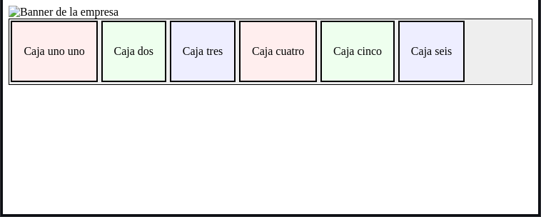y acomodarán su ancho para que así sea:
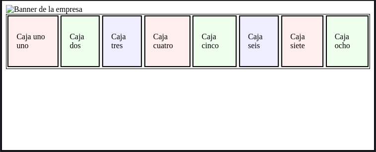Sin embargo, puede cambiarse la dirección y que se sitúen verticalmente (flex-direction):
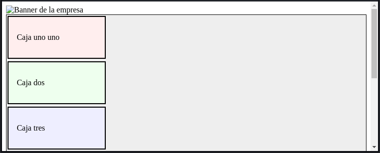#container { display: flex; flex-direction: column; }
De hecho, en un dispositivo con la pantalla pequeña convendría utilizar esta disposición en vez de la horizontal, así que podríamos usar las media queries a tal fin:
#container { display:flex; } @media screen and (width <= 400 px) { #container { flex-direction: column; } }
También se pueden justificar los bloques (justify-content):
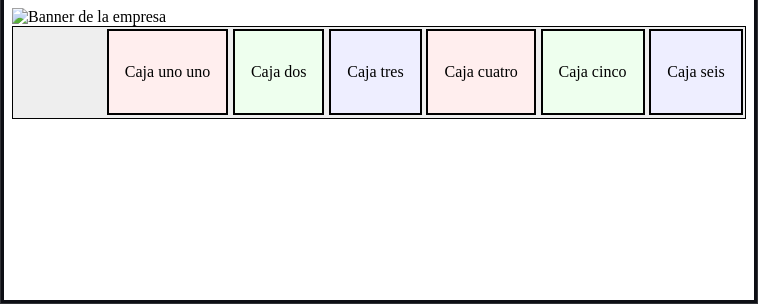#container { display: flex; justify-content: right; }
o:
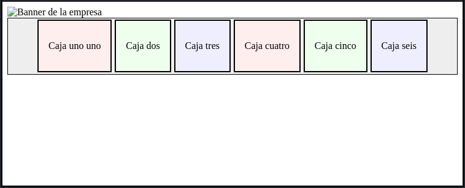#container { display: flex; justify-content: center; }
Es posible también alterar el orden de los bloques (order):
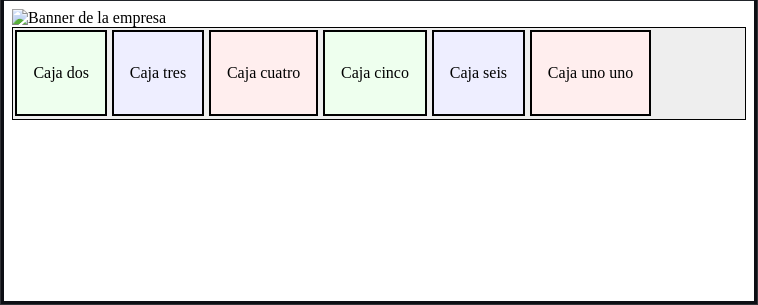#item-1 { /* Por defecto, todos los ítem tienen para su orden valor 0 */ order: 1; }
Hay muchas otras posibilidades que se pueden ensayar jugando los 24 niveles de Flexbox Froggy.
7.3.2.2. Grid¶
Prudencia
Como en el caso de Flexbox, las explicaciones son insuficientes y convendría recurrir a una guía de grid completa.
Es el mecanismo más moderno de maquetación y, en principio, el más sencillo para realizar maquetaciones complejas. Empezemos por definir algunos términos:
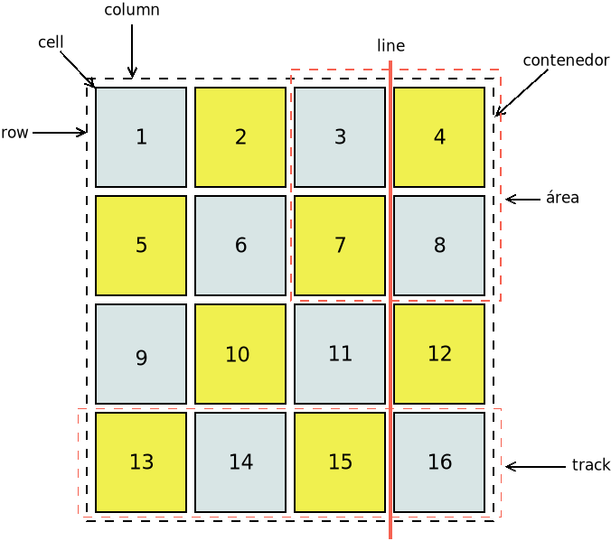- Contenedor
Es el elemento que contiene toda la rejilla o cuadrícula.
- Cell
Es cada una de las posiciones en que se descompone la cuadrícula. En principio, los elementos hijos (ítems) del contenedor ocupan una celda, a menos que se especifique que ocupa varias filas o varias columnas mediante las propiedades grid-row-start, etc. que se tratarán más adelante.
- Line
Son las líneas horizontales o verticales imaginarias que separan unas celdas de otras.
- Gap
Es el espacio (o margen) que queda entre celdas. Por defecto, no existe. En principio, también puede lograrse este espacio de separación definiendo márgenes para los ítems, pero es mejor definirlo mediante la propiedad gap, ya que si se define con ella este espacio formará parte de los cálculos que hace el navegador para definir las dimesiones de los ítems (p.e. cuando se definen con
frcomo se verá más adelante).- Track
Es el conjunto de celdas entre dos líneas contiguas.
- Column
Es cada una de la bandas (tracks) verticales.
- Row
Es cada una de las bandas (tracks) horizontales.
- Area
Es un conjunto de celdas contiguas que constituyen un rectángulo. Cualquier rectángulo constituído por celdas contíguas es un área válida.
Dicho lo cual, podemos enunciar algunas de sus pautas más importantes:
Se aplica sobre las cajas que se encuentran contenidas en un elemento cuya propiedad display tenga el valor
grid, de modo que las dichas cajas se disponen en una rejilla o cuadrícula (de ahí su nombre) para la cual debemos indicar cuántas filas y columnas tiene:#container { display: grid; grid-template: repeat(4, 25%) / repeat(4, 25%); /* Equivale a estas dos propiedades por separado grid-template-rows: repeat(4, 25%); grid-template-columns: repeat(4, 25%); */ }
El ejemplo genera una rejilla de 4x4, en la que todas las cajas o ítems (en principio serían 16, aunque pueden ser menos) ocupan lo mismo[3]. Además, se ha utilizado
repeat()en vez de enumerar uno a uno todos los anchos y altos puesto que son iguales.Estas medidas se pueden poner en valores absolutos (p.e. 400px) y, si los mezcláramos con valores relativos, sería complicado ocupar todo el ancho o el alto disponibles. Por ese emotivo, existe para este diseño la unidad
frque significa fracción del restante. Por eso, lo anterior habría estado mejor haberlo escrito como:#container { display: grid; grid-template: repeat(4, 1fr) / repeat(4, 1fr); gap: .15rem; /* Espacio entre cajas */ }
En que cada ítem ocupa una fracción del restante. Como el restante es todo, cada caja ocupará el 25%. Aunque esto no es totalmente cierto, porque hemos añadido que queremos que quede un espacio de margen entre las cajas. Ese margen es tenido en cuenta en los cálculos del navegador, así que cada caja ocupará un pelín menos.
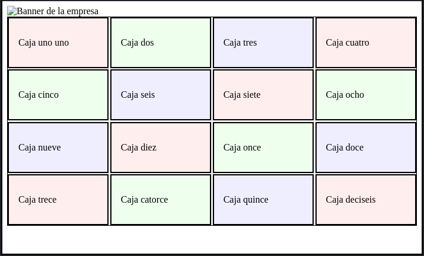Podemos cambiar de orden alguna de las cajas:
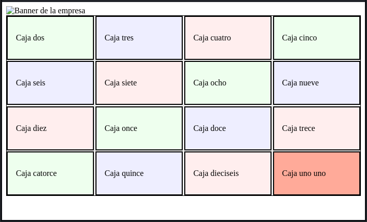#item-1 { order: 1; background-color: #FA9; }
También podemos jugar con las propiedades grid-row-start, grid-column-start, grid-row-start, grid-column-end, y las propiedades que las resumen grid-row, grid-column y grid-area para colocar alguna de las cajas en cualquier posición o para hacer que ocupe varias posiciones en vertical u horizontal:
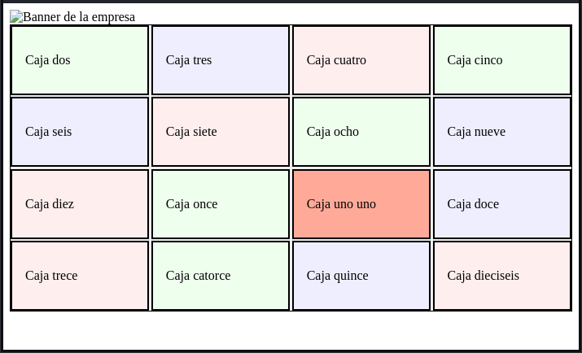#item-1 { grid-row-start: 3; grid-column-start: 3; background-color: #FA9; }
O bien, podemos ampliar a seis filas, añadir dos cajas más y hacer que la primera y la última ocupen todo el ancho:
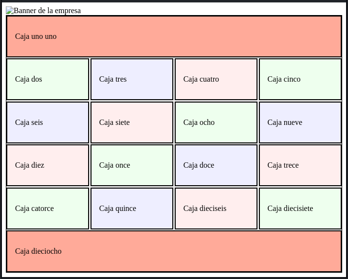#container { display: grid; grid-template: repeat(6, 1fr) / repeat(4, 1fr); gap: .15rem; } #item-1, #item-18 { grid-column: 1 / -1; /* o grid-column: span 4 */ background-color: #FA9; }
Un ítem que ocupe varias celdas (un área), podemos hacer que herede las filas, columnas y huecos definidos para el contenedor. Por ejemplo, si al CSS anterior añadimos:
#item-1 { /* Ya está definido arriba que ocupa dos columnas: grid-column: 1 / -1 */ display: grid; grid-template-columns: subgrid; }
Este ítem podría contener dentro cuatro elementos y éstos se distribuirían en cuatro columnas separadas por una distancia de .15rem.
Hasta ahora, por claridad, hemos definido las filas y las columnas de la rejilla explícitamente:
#container { display: grid; grid-template: repeat(4, 1fr) / repeat(4, 1fr); }
O sea, la rejilla es 4x4 y hemos definido 16 celdas. Incluso cuando añadimos dos celdas más e hicimos que la primera y la última ocuparan todo el ancho definimos una rejilla 6x4 para que todas las celdas siguieran ocupando filas y columnas explícitas. Sin embargo, esto no tiene por qué ser así. Para ilustrarlo añadamos a nuestro ejemplo inicial de 16 celdas:
#item-4 { grid-row-start: 1; grid-column-start: 6; }
En principio, habíamos definido una rejilla explícita de 4x4, pero hemos colocado la cuarta celda en la sexta columna de la primera fila. El efecto es este:
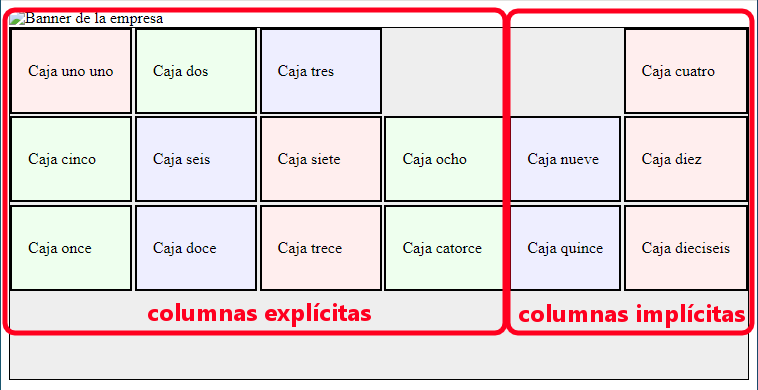La rejilla pasa a ser 4x6, con cuatro columnas explícitas y dos columnas implícitas. Las explícitas las controlamos, ya que las definimos y sabemos que se reparten equitativamente el espacio disponible (
1fr). En cambio, ¿qué ocurre con las implícitas?Las implícitas ocupan el espacio (ancho, porque son columnas) definido por la propiedad grid-auto-columns, que en ausencia de definición tiene el valor
auto, o sea, el ancho necesario para albergar el contenido. Por ese motivo, en la captura ajustan su ancho a la longitud del texto[4]. En cambio, si hiciéramos:#container { display: grid; grid-template: repeat(4, 1fr) / repeat(4, 1fr); grid-auto-columns: 300px; }
las dos últimas columnas, por ser implícitas, ocuparían 300px cada una.
Hemos ilustrado este concepto para columnas, pero es análogo en filas (en este caso con la propiedad grid-auto-rows). Abundando en este concepto, tanto grid-template-rows como grid-template-columns tiene por defecto el valor
noneque significa que todas las filas (o columnas) necesarias son implícitas. Por ese motivo el código:#container { display: grid; grid-template-columns: repeat(4, 1fr); } #item-4 { grid-row-start: 1; grid-column-start: 6; }
provoca una representación prácticamente idéntica, con la salvedad de que la rejilla sólo tendrá 3 filas.
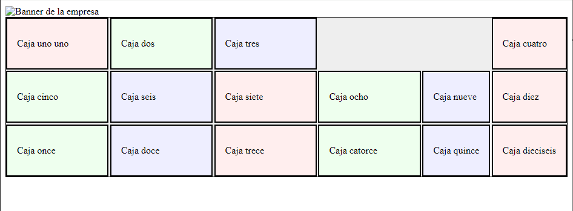Prudencia
En realidad, que la representación sea la misma se debe a la unión de varios factores:
No hay definida una altura, por lo que la altura final depende de la altura de los propios elementos.
En este caso concreto, todos los ítems necesitan la misma altura para contener su contenido, por lo que
1frpara todas las filas equivale aautopara todas ellas[5].El valor de
noneequivale al deautopara todas las filas porque grid-auto-rows no se ha definido y, en consecuencia, su valor esauto.
Ver también
Échele un ojo a las explicaciones de css-tricks.com para grid-template-rows y grid-auto-rows (entendidas estas se entienden las equivalentes para columnas).
Cuando la maquetación es complicada, pueden mapearse las distintas áreas que ocupan las cajas con la propiedad grid-template-areas y asociar luego cada caja a una de estas áreas. Por ejemplo, para estas áreas:
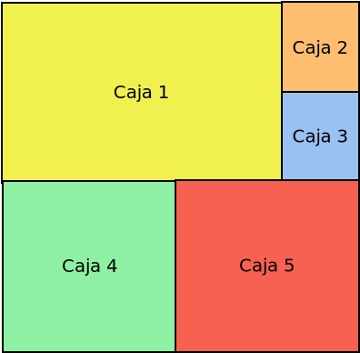Deberíamos crear un CSS así:
#container { display: grid; grid-template-areas: "a a a b" "a a a c" "d d e e" "d d e e"; } #item-1 { grid-area: a; } #item-2 { grid-area: b; } #item-3 { grid-area: c; } #item-4 { grid-area: d; } #item-5 { grid-area: e; }
Por hacer
Explicar auto-fill y auto-fit.
Para aprender más posibilidades intente completar los 28 niveles de CSS Garden.
7.3.3. Ejercicios propuestos¶
escribas reglas CSS para lograr el siguiente aspecto:
El ancho máximo ocupado son 1140px y la página debe estar centrada.
Maquete la página como se ve en la imagen de aquel ejercicio usando flexbox y sabiendo que:
Cuando el ancho de la pantalla es menor a 576px, el menú de navegación, el cuerpo de la página y la banda derecha de anuncios, deben situarse uno debajo del otro, en vez de en tres columnas.
Cuando las tres zonas está dispuestas en columnas, el menú de navegación, no debe ser más estrecho de 75px. ni más ancho de 200px; y la banda de anuncios no puede ser más ancha de 200px.
Debe haber un espacio entre las tres zonas de .25rem.
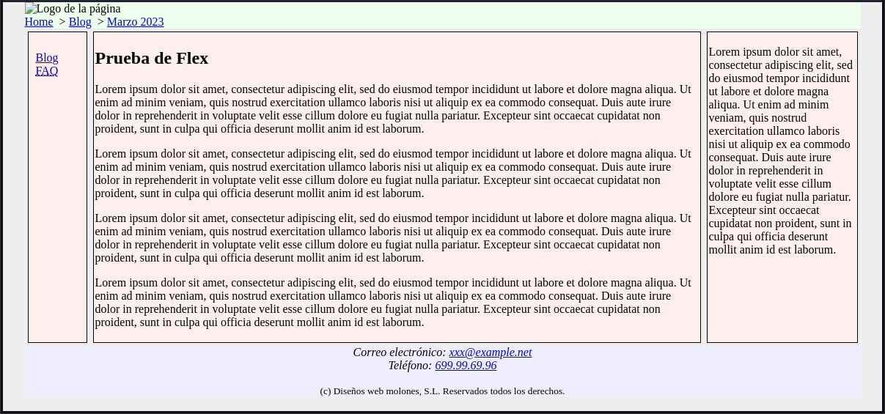
Ponga colores de fondo diferentes para:
La cabecera.
Las tres zonas.
El pie y el espacio que queda entre las zonas.
El margen exterior.
Reproduzca los detalles que se pueden apreciar en la captura que acompaña a este texto (aspecto de la ruta de navegación, alineación del texto, etc.)
Repita el ejercicio, pero maquetando con grid:
Mantenga que para anchos menores a 576px se vean las tres cajas una debajo de otra.
La separación entre cajas debe ser de .25rem.
Para anchos menores a 800px, el menú de navegación debe ocupar 125px y la banda de publicidad 150px.
Para anchos mayores, tanto el menú de navegación como el de publicidad deben ocupar 200px.
Se facilita una
plantilla HTMLa cuyos elementos puede añadir atributosidyclass, si lo estima necesario.
Notas al pie